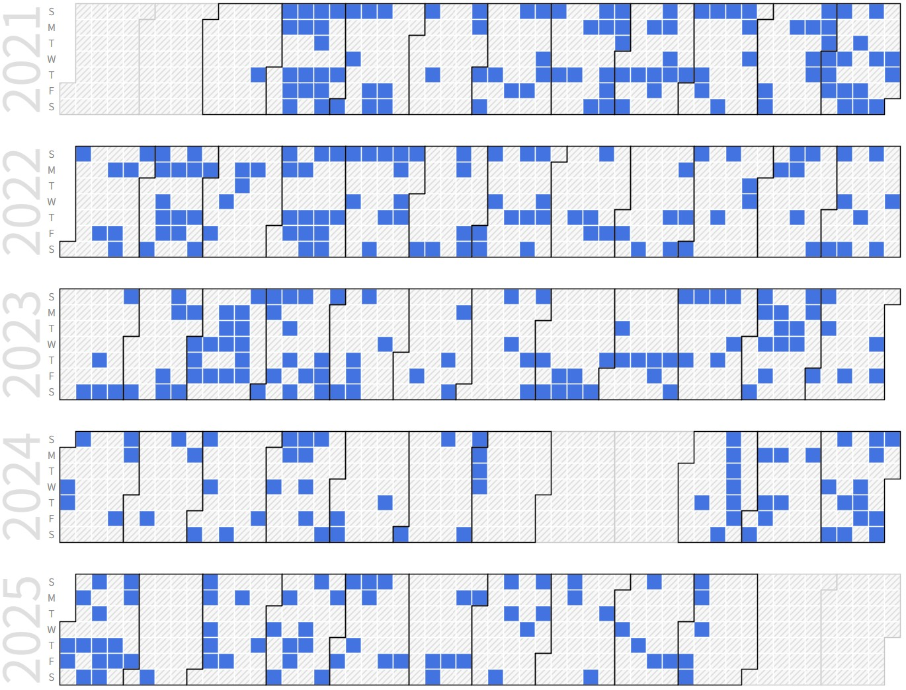

Heuijee Yun (Integrated Ph.D. Candidate)
 |
Integrated Ph.D. Candidate. |
Repository Commit History
|  |
Introduction
Full Bio Sketch
Ms. Yun received her B.S. Degree in Electronics Engineering at Kyungpook National University, Daegu, Korea in 2022. She is currently an Integrated Ph.D. student in School of Electronic and Electrical Engineering at Kyungpook National University, Daegu, Republic of Korea. Her research interests include image processing that can be implemented on a lightweight embedded board. Also, she has been conducting various simulations and light-weight image processing required for autonomous driving using deep learning and parallel processing of FPGA. She is currently researching about algorithm of low-power for image processing in an autonomous driving ADAS system. She received 2024 KNU-EE Funded Excellence Ph.D Award (10,000,000 Won Scholarship). She received excellent research grant (25,000,000 Won Scholarship) from National Research Foundation (NRF) in 2025.
Research Topic
LiDAR Signal Processing
 Among the functions of self-driving cars, avoidance after object recognition is important. Because camera data alone is insufficient to recognize and avoid people or obstacles, we train objects as deep neural networks with data combined with LiDAR data. Then we can apply the educated weight using Yolo, Tensorflow and Opencv for object detection. As a result, Obstacle avoidance algorithms can be executed more accurately and faster.
Among the functions of self-driving cars, avoidance after object recognition is important. Because camera data alone is insufficient to recognize and avoid people or obstacles, we train objects as deep neural networks with data combined with LiDAR data. Then we can apply the educated weight using Yolo, Tensorflow and Opencv for object detection. As a result, Obstacle avoidance algorithms can be executed more accurately and faster.
FPGA-based Oject Detection for Autonomous Driving
 Parallelization of image processing for low-power implement - Currently, the board used for autonomous driving is equivalent to a single computer. While various studies are being conducted in the direction of using lightweight FPGAs for efficiency, we study data of image sensors, which are essential functions for ADAS systems in autonomous vehicles. When a huge amount of image data is input, a lightweight algorithm is studied so that the data can be used in a lightweight FPGA. The lane recognition algorithm is largely composed of two flows, canny edge detection and hough transform. At this time, canny edge detection passes through several filters, and at this time, many matrix operations must use several resources. We parallelized this task on a pixel basis and implemented it using a hardware language with low power, small runtime, and constant accuracy.
Parallelization of image processing for low-power implement - Currently, the board used for autonomous driving is equivalent to a single computer. While various studies are being conducted in the direction of using lightweight FPGAs for efficiency, we study data of image sensors, which are essential functions for ADAS systems in autonomous vehicles. When a huge amount of image data is input, a lightweight algorithm is studied so that the data can be used in a lightweight FPGA. The lane recognition algorithm is largely composed of two flows, canny edge detection and hough transform. At this time, canny edge detection passes through several filters, and at this time, many matrix operations must use several resources. We parallelized this task on a pixel basis and implemented it using a hardware language with low power, small runtime, and constant accuracy.
Currently, with the active development of autonomous driving, several technologies corresponding to it are developing. An essential technology to achieve a high level of autonomous driving is image processing technology. Since the camera input is an essential element, the key is how to implement it in a lightweight vehicle processor. Therefore, we study a lightweight image processing method using parallel processing so that it can be executed on a lightweight embedded board. There are two major algorithms required for lane recognition: Canny edge detection and Hough transformation. Hough transformation cannot be parallelized because all pixels must be read due to the nature of the algorithm, and Canny edge detection is parallelized. After completing the grayscale conversion, the gaussian smoothing, sobel operator, non-maximum suppression and hysteresis parts can be parallelized. Since this part requires filter operation, the corresponding pixel must be determined and parallelized. The pixels in each thread must be at least 5 wide because the Gaussian filter is 5x5. Through this parallelization, efficient results can be obtained in terms of memory and time, and accordingly, a lightweight lane recognition algorithm can be implemented
On-Chip Instruction Execution Acceleration for AI Processors
 Recently, it has become possible to train neural networks on MPUs to achieve high performance and reduce power consumption. However, analyzing and processing the massive amounts of data used in deep learning is only being done on better performing multicore microprocessors. ARM-based cores have introduced the concept of single instruction, multiple data (SIMD), which plays an important role in optimizing the performance of deep learning algorithms. SIMD is a parallel processing technique classified according to Flynn's taxonomy. However, SIMD is only available on certain ARM cores and compilers, and it increases the size of the bus because it sends and receives 128-bit data. It also requires vectorization of the input data, which requires resources for preprocessing. Therefore, we introduce an implementation of micro-SIMD on the ARM Cortex M0 structure. Although the original ARM Cortex M0 does not have a SIMD, we generated and executed 16-bit instructions directly. Neural network training algorithms such as CNNs require a huge number of loops and MAC operations for each training layer. The parallelism of micro-SIMD can be very effective in computations like this, where the same operations are performed repeatedly.
Recently, it has become possible to train neural networks on MPUs to achieve high performance and reduce power consumption. However, analyzing and processing the massive amounts of data used in deep learning is only being done on better performing multicore microprocessors. ARM-based cores have introduced the concept of single instruction, multiple data (SIMD), which plays an important role in optimizing the performance of deep learning algorithms. SIMD is a parallel processing technique classified according to Flynn's taxonomy. However, SIMD is only available on certain ARM cores and compilers, and it increases the size of the bus because it sends and receives 128-bit data. It also requires vectorization of the input data, which requires resources for preprocessing. Therefore, we introduce an implementation of micro-SIMD on the ARM Cortex M0 structure. Although the original ARM Cortex M0 does not have a SIMD, we generated and executed 16-bit instructions directly. Neural network training algorithms such as CNNs require a huge number of loops and MAC operations for each training layer. The parallelism of micro-SIMD can be very effective in computations like this, where the same operations are performed repeatedly.
Deep Learning based Human Detection using Thermal-RGB Data Fusion
 As the number of drivers increases every year, so does the number of traffic fatalities. In Korea, pedestrian accidents accounted for 35.5% of all traffic accidents in the last two years, and the number of accidents involving children is increasing every year. Currently, self-driving cars rely on lidar, which can only recognize obstacles in the distance, making it inadequate for accident prevention. To reduce these accidents, we propose selective thermal data that can identify people beyond the limited field of view. We first utilize RGB camera image data for object recognition. In the presence of vehicles or obstacles, we selectively use thermal data. The thermal data can only identify people, which is used to prevent unexpected accidents. The RGB image is divided into thirds and each section is evaluated for obstacles, prioritizing the areas with the most obstacles for integration with thermal data. Using the algorithm described, the accuracy increased by a factor of 2.07, from 40.43% to 83.91%. In addition, experiments performed on a personal computer show that the algorithm can operate in real time at a rate of 2.7 frames per second, using 175.95 megabytes of memory for 0.36 seconds per image. When running the algorithm on a lightweight board such as the Jetson Nano, it runs at a rate of 0.75 frames per second, using 140.08 megabytes of memory for 1.33 seconds per image.
As the number of drivers increases every year, so does the number of traffic fatalities. In Korea, pedestrian accidents accounted for 35.5% of all traffic accidents in the last two years, and the number of accidents involving children is increasing every year. Currently, self-driving cars rely on lidar, which can only recognize obstacles in the distance, making it inadequate for accident prevention. To reduce these accidents, we propose selective thermal data that can identify people beyond the limited field of view. We first utilize RGB camera image data for object recognition. In the presence of vehicles or obstacles, we selectively use thermal data. The thermal data can only identify people, which is used to prevent unexpected accidents. The RGB image is divided into thirds and each section is evaluated for obstacles, prioritizing the areas with the most obstacles for integration with thermal data. Using the algorithm described, the accuracy increased by a factor of 2.07, from 40.43% to 83.91%. In addition, experiments performed on a personal computer show that the algorithm can operate in real time at a rate of 2.7 frames per second, using 175.95 megabytes of memory for 0.36 seconds per image. When running the algorithm on a lightweight board such as the Jetson Nano, it runs at a rate of 0.75 frames per second, using 140.08 megabytes of memory for 1.33 seconds per image.
Spike Neural Network SoC Implementation
 SNNs are a type of artificial neural network (ANN) that mimic the way brain neural networks process information. They use spikes as the unit of information, which propagate through a network of neurons and synapses. Spikes exchange only discrete information about whether a spike occurred in a specific neuron at a specific time, as opposed to tensors or floats in existing deep learning networks such as MLP, RNN, and CNN. The Convolutional Spiking Neural Network structure can operate with fewer electrical signals and is more energy efficient than deep neural networks (DNN) and convolutional neural networks (CNN) because it consumes less power. However, this comes at the cost of lower accuracy. To address this issue, we propose a structure that computes multiple Convolutional layers in parallel by classifying them according to the patterns in the input dataset. This structure creates parallel layers based on the input class and prunes the processing element (PE) units to fit each input. The resulting structure is more accurate and can be trained on lightweight hardware.
SNNs are a type of artificial neural network (ANN) that mimic the way brain neural networks process information. They use spikes as the unit of information, which propagate through a network of neurons and synapses. Spikes exchange only discrete information about whether a spike occurred in a specific neuron at a specific time, as opposed to tensors or floats in existing deep learning networks such as MLP, RNN, and CNN. The Convolutional Spiking Neural Network structure can operate with fewer electrical signals and is more energy efficient than deep neural networks (DNN) and convolutional neural networks (CNN) because it consumes less power. However, this comes at the cost of lower accuracy. To address this issue, we propose a structure that computes multiple Convolutional layers in parallel by classifying them according to the patterns in the input dataset. This structure creates parallel layers based on the input class and prunes the processing element (PE) units to fit each input. The resulting structure is more accurate and can be trained on lightweight hardware.
Hardware Accelerator for Spiking Self-Supervised Learning
 Conventional self-supervised learning (SSL) models have demonstrated significant potential for efficiently learning from large-scale unstructured data. However, their high computational complexity and resource demands pose challenges for deployment on edge devices or hardware-constrained environments. In contrast, Spiking Neural Networks (SNNs), inspired by biological neurons, are characterized by low power consumption and asynchronous processing, making them highly efficient in resource-limited settings. Despite these advantages, no hardware accelerator currently exists that combines SSL models with SNNs, and research on optimization techniques integrating these two technologies remains insufficient. Therefore, we propose a high-performance hardware accelerator architecture for spiking SSL models along with corresponding hardware optimization methods. This architecture leverages the unique characteristics of both SNNs and SSL to maximize computational efficiency through data preprocessing, memory optimization, parallel processing, and pipelined structures.
Conventional self-supervised learning (SSL) models have demonstrated significant potential for efficiently learning from large-scale unstructured data. However, their high computational complexity and resource demands pose challenges for deployment on edge devices or hardware-constrained environments. In contrast, Spiking Neural Networks (SNNs), inspired by biological neurons, are characterized by low power consumption and asynchronous processing, making them highly efficient in resource-limited settings. Despite these advantages, no hardware accelerator currently exists that combines SSL models with SNNs, and research on optimization techniques integrating these two technologies remains insufficient. Therefore, we propose a high-performance hardware accelerator architecture for spiking SSL models along with corresponding hardware optimization methods. This architecture leverages the unique characteristics of both SNNs and SSL to maximize computational efficiency through data preprocessing, memory optimization, parallel processing, and pipelined structures.
Loop Structured RTL Synthesis Framework for Irregular Neural Accelerator
 Modern neural networks increasingly exhibit irregular behaviors?such as structural imbalance from skip connections and asymmetric kernels, temporal sparsity from spiking activity or dynamic gating, and conditional irregularity from input dependent routing?which, while improving algorithmic efficiency, make hardware implementation unpredictable and inefficient. Conventional template based flows lock architectural patterns and resource mappings at design time, preventing any adaptation to backend synthesis feedback on timing, power, or area, and thus fail to cope with runtime variability and pipeline stalls. To overcome this rigidity, FLEXOR introduces a closed loop RTL co design framework that begins with model parsing and frontend optimization, where graph level irregularity profiling, pruning, scheduling, operator fusion, and quantization are applied to extract metrics that capture structural, temporal, and conditional irregularities. These metrics then guide a backend loop composed of tuning, RTL code generation, design estimation, and synthesis feedback, where parameterized hardware templates and automated glue code enable iterative refinement. The loop continues until convergence, dynamically adapting architecture and resource allocation to satisfy constraints. Through this integration of irregularity aware profiling and synthesis guided feedback, FLEXOR achieves up to 543.5 percent throughput improvement, preserves up to 90 percent sparsity with negligible accuracy loss, and reduces energy delay product by 52.4 percent, demonstrating a scalable and adaptive solution that breaks the limitations of static template based design flows.
Modern neural networks increasingly exhibit irregular behaviors?such as structural imbalance from skip connections and asymmetric kernels, temporal sparsity from spiking activity or dynamic gating, and conditional irregularity from input dependent routing?which, while improving algorithmic efficiency, make hardware implementation unpredictable and inefficient. Conventional template based flows lock architectural patterns and resource mappings at design time, preventing any adaptation to backend synthesis feedback on timing, power, or area, and thus fail to cope with runtime variability and pipeline stalls. To overcome this rigidity, FLEXOR introduces a closed loop RTL co design framework that begins with model parsing and frontend optimization, where graph level irregularity profiling, pruning, scheduling, operator fusion, and quantization are applied to extract metrics that capture structural, temporal, and conditional irregularities. These metrics then guide a backend loop composed of tuning, RTL code generation, design estimation, and synthesis feedback, where parameterized hardware templates and automated glue code enable iterative refinement. The loop continues until convergence, dynamically adapting architecture and resource allocation to satisfy constraints. Through this integration of irregularity aware profiling and synthesis guided feedback, FLEXOR achieves up to 543.5 percent throughput improvement, preserves up to 90 percent sparsity with negligible accuracy loss, and reduces energy delay product by 52.4 percent, demonstrating a scalable and adaptive solution that breaks the limitations of static template based design flows.
Dynamic Behavioral Partitioning for Adaptive Task Specific Parallel Neural Network Training
 The rapid growth of deep learning models in vision, language, and generative AI has amplified the demand for distributed and parallel training, but conventional approaches that statically partition data or models fail to account for dynamic neuron activation patterns, leading to workload imbalance, bottlenecks, and inefficiency in heterogeneous systems. To address these limitations, BPATH introduces a behavior driven framework that analyzes neuron activations, gradients, and computational intensity in real time to derive behavioral metrics. These metrics are processed by a multi stage architecture: the behavioral analysis module extracts activation and gradient statistics; the data clustering engine organizes inputs based on behavioral similarity using methods such as game theoretic clustering, random projection, and ensemble refinement; and the dynamic path design module allocates tasks asynchronously across heterogeneous resources while the resource optimization engine continuously balances workload, adapts to network delays, and mitigates node failures. This integrated structure allows BPATH to create adaptive training paths that reflect both data behavior and system conditions. Experimental evaluation on benchmarks such as COCO and GLUE, using models like ResNet, YOLO, EfficientNet, BERT, and GPT, shows that BPATH improves training speed by up to 91 percent, reduces CPU and GPU memory usage by 94 percent, lowers network latency by 35.2 percent, and enhances adaptation speed to environmental changes by 29.2 percent, demonstrating its ability to significantly boost efficiency, scalability, and resilience in distributed learning
The rapid growth of deep learning models in vision, language, and generative AI has amplified the demand for distributed and parallel training, but conventional approaches that statically partition data or models fail to account for dynamic neuron activation patterns, leading to workload imbalance, bottlenecks, and inefficiency in heterogeneous systems. To address these limitations, BPATH introduces a behavior driven framework that analyzes neuron activations, gradients, and computational intensity in real time to derive behavioral metrics. These metrics are processed by a multi stage architecture: the behavioral analysis module extracts activation and gradient statistics; the data clustering engine organizes inputs based on behavioral similarity using methods such as game theoretic clustering, random projection, and ensemble refinement; and the dynamic path design module allocates tasks asynchronously across heterogeneous resources while the resource optimization engine continuously balances workload, adapts to network delays, and mitigates node failures. This integrated structure allows BPATH to create adaptive training paths that reflect both data behavior and system conditions. Experimental evaluation on benchmarks such as COCO and GLUE, using models like ResNet, YOLO, EfficientNet, BERT, and GPT, shows that BPATH improves training speed by up to 91 percent, reduces CPU and GPU memory usage by 94 percent, lowers network latency by 35.2 percent, and enhances adaptation speed to environmental changes by 29.2 percent, demonstrating its ability to significantly boost efficiency, scalability, and resilience in distributed learning
Publications
Journal Publications (SCI 7, KCI 3)
Heuijee Yun and Daejin Park. Virtualization of Self-Driving Algorithms by Interoperating Embedded Controllers on Game Engine for Digital Twining Autonomous Vehicle (SCI) Electronics, 2021.
Heuijee Yun and Daejin Park. Efficient Object Recognition by Masking Semantic Pixel Difference Region of Vision Snapshot for Lightweight Embedded Systems (KCI) Journal of the Korea Institute of Information and Communication Engineering, 26(6):813-826, 2022.
Heuijee Yun and Daejin Park. Efficient Object Detection based on Masking Semantic Segmentation Region for Lightweight Embedded Processors (SCI) Sensors, 22(22):8890-8911, 2022.
Heuijee Yun and Daejin Park. Low-Power Lane Detection Unit with Sliding-based Parallel Segment Detection Accelerator for Lightweighted Automotive Microcontrollers (SCI) IEEE Access, 12:4339-4353, 2024.
Heuijee Yun and Daejin Park. High-Speed Energy-Efficient Model based Dynamic Pruning using Pattern-based Alignment for Convolutional Spiking Neural Network Hardware Accelerators (KCI) IEMEK Journal of Embedded Systems and Applications, 2024.
Heuijee Yun and Daejin Park. S3A-NPU: A High-Performance Hardware Accelerator for Spiking Self-Supervised Learning with Dynamic Adaptive Memory Optimization (VLSI Top Flagship Journal, SCI) IEEE Transactions on Very Large Scale Integration (VLSI) Systems, 33(7):1886-1898, 2025.
Heuijee Yun and Daejin Park. FLEXOR: Breaking Template Walls with Loop-Structured RTL Synthesis Framework for Irregular Neural Accelerators (VLSI Top Flagship Journal, SCI) (Under Review) IEEE Transactions on Computer-Aided Design of Integrated Circuits and Systems (TCAD), 2025.
Heuijee Youn and Daejin Park. B-PATH: Dynamic Behavioral Partitioning for Adaptive Task-Specific Parallel Neural Network Training (SCI) (On Writing) IEEE Transactions on Parallel and Distributed Systems (TPDS), 2025.
Heuijee Youn and Daejin Park. SOAL: Self-Optimizing Edge AI for Autonomous Vehicles with Real-Time Adaptive Learning (JCR 2% Top Journal,SCI) (On Writing) IEEE Transactions on Intelligent Transportation Systems (TITS), 2025.
Heuijee Yun and Daejin Park. On Preparation (KCI) Journal of the Korea Institute of Information and Communication Engineering, 2025.
Conference Publications (Intl. 11)
Heuijee Yun and Daejin Park. Simulation of Self-driving System by implementing Digital Twin with GTA5 In IEEE ICEIC 2021, 2021.
Heuijee Yun and Daejin Park. Yolo-based Realtime Object Detection using Interleaved Redirection of Time-Multiplxed Streamline of Vision Snapshot for Lightweighted Embedded Processors In 2021 International Symposium on Intelligent Signal Processing and Communication Systems (ISPACS), 2021.
Heuijee Yun and Daejin Park. Mitigating Overflow of Object Detection Tasks Based on Masking Semantic Difference Region of Vision Snapshot for High Efficiency In 2022 IEEE International Conference on Artificial Intelligence in Information and Communication (ICAIIC), 2022.
Heuijee Yun and Daejin Park. FPGA Realization of Lane Detection Unit using Sliding-based Parallel Segment Detection for Buffer Memory Reduction In IEEE ICCE 2023, 2023.
Heuijee Yun and Daejin Park. Low-Power Parallel Lane Detection Unit for Lightweight Automotive Processors In IEEE COOLChips 2023, 2023.
Jisu Kwon, Heuijee Yun, and Daejin Park. Dynamic MAC Unit Pruning Techniques in Runtime RTL Simulation for Area-Accuracy Efficient Implementation of Neural Network Accelerator In IEEE MWSCAS 2023, 2023.
Heuijee Yun and Daejin Park. Parallel Processing of 3D Object Recognition by Fusion of 2D Images and LiDAR for Autonomous Driving In International Conference on Electronics, Information, and Communication (ICEIC 2024), 2024.
Heuijee Yun and Daejin Park. Deep Learning based Human Detection using Thermal-RGB Data Fusion for Safe Automotive Guided-Driving In IEEE International Conference on Pervasive Computing and Communication (Top Tier Conf. Percom 2024 - Pervehicle), 2024.
Heuijee Yun and Daejin Park. A Power-Efficient Reconfigurable Hybrid CNN-SNN Accelerator for High Performance AI Applications In IEEE Symposium on Low-Power and High-Speed Chips and Systems (Flagship Conf. COOLChips 2025), 2025.
Heuijee Yun and Daejin Park. Opti-SpiSSL: A Highly Reconfigurable Hardware Generation Framework for Spiking Self-Supervised Learning on Heterogeneous SoC In IEEE Design Automation Conference (Top Tier Conf. DAC 2025), 2025.
Heuijee Yun and Daejin Park. Under Blind Review In IEEE Design, Automation and Test in Europe Conference (DATE 2026) (Under Review), 2026.
Patents (Total 7 Patents)
Autonomous Driving Algorithm Simulation Method and System based on Game Engine In Korea Patent and Tradmark Office, Korea Patent 10-260183, 2024
Real-Time Object Detection System and Method using Interleaving of Snapshots In Korea Patent and Tradmark Office, June 2022. Korea Patent Pending
System and Method for Recognizing Object Included in Image In Korea Patent and Tradmark Office, June 2022. Korea Patent Pending
Compiling Device and Method for Spiking Neural Network Model In Korea Patent and Tradmark Office, Dec 2024. Korea Patent Pending
Accelerator for Spiking Self-Supervised Learning Model and Computational Method of the Accelerator In Korea Patent and Tradmark Office, Dec 2024. Korea Patent Pending
FPGA-based Lane Detection Accelerator and Lane Detection Method In Korea Patent and Tradmark Office, Dec 2024. Korea Patent Pending
Pedestrian Detection Method and Pedestrian Detection Device Performing the Same In Korea Patent and Tradmark Office, Dec 2024. Korea Patent Pending
Participation in International Conference
IEEE ICEIC 2021, Jeju, Korea
IEEE ISPACS 2021, Jeju, Korea
IEEE ICAIIC 2022, Jeju, Korea
ACM Micro 2022, Chicago, USA
ACM Multimedia ASIA 2022, Tokyo, Japan
IEEE ICCE 2023, Las Vegas, USA
IEEE COOLChips 2023, Tokyo, Japan
IEEE MWSCAS 2023, Arizona, USA
IEEE ICEIC 2024, Taipei, Taiwan
IEEE Percom 2024, Biarritz, France
IEEE ISLPED 2024, California, USA
IEEE COOLChips 2025, Tokyo, Japan
IEEE DAC 2025, San Francisco, USA
Last Updated, 2025.09.09